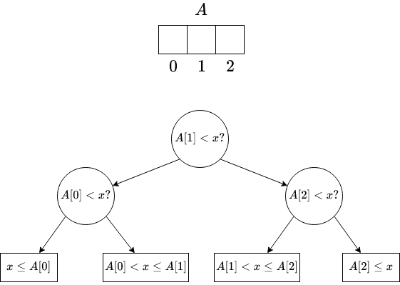
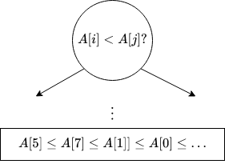
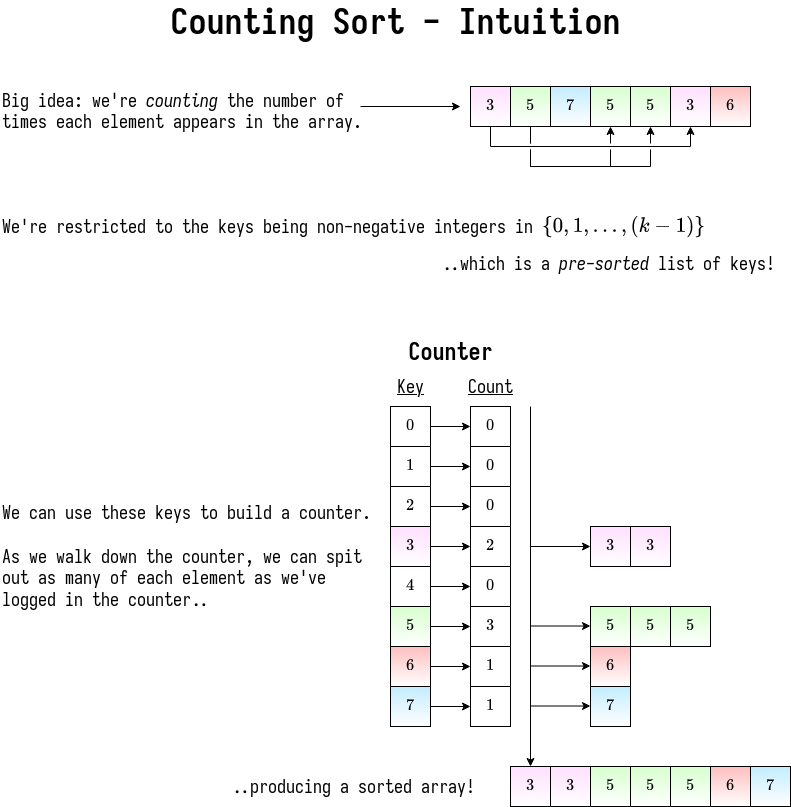

Lower Bounds for Sorting
Decision Tree
Any comparison algorithm can be viewed as as a tree of all possible comparisons, their outcomes, and resulting answer for any particular \(n\).
Searching Lower Bound
Let's consider searching first, using binary search as an example.

| decision tree | algorithm |
|---|---|
| internal node | binary decision (comparisons) |
| leaf | found answer |
| root-to-leaf | algorithm execution |
| path length | running time |
| height of the root | worst-case running time |
Searching Lower Bound
- \(n\) pre-processed items
- finding a given item among them in comparison model requires \(\Omega(\log{n})\) time in worst case.
Proof:
- decision tree is binary and must have at least \(n\) leaves, one for each answer
- \(\text{height} \geq \log{n} \quad \blacksquare\)
This proves that binary search is optimal for the comparison model!
Sorting Lower Bound
This problem has the same fundamental structure! You're just comparing elements of the list against each other rather than one search subject.

- decision tree is binary
- number of leaves \(\geq\) number of possible answers \(= n!\)
- \(\text{height} \geq \log{(n!)}\)
Where'd the factorial come from? (hint: permutations)
Note: the lecturer proves that this is \(\Omega(n \log{n})\), but his method is heavier than we've used.
I should probably update this with our proof if we cover one.
Linear-Time (Integer) Sorting
Assumptions:
- the \(n\) keys being sorted are integers \(\in \{0, 1, \dots, k-1\}\)
- each key fits in a word
- we can do a whole lot more than raw comparisons!
- for \(k\) ........ (not too big) ........ can sort in \(O(n)\) time
- specifically, \(k = n^{O(n)}\) - \(k\) can be polynomial in \(n\)
- if all your integers are \(0 \leq i \leq n^{100}\) (for example), can sort in \(n\log{n}\) time.
- as of 2011, this is still being solved!
- the best algorithm at the time (2011) was \(O\left(n\sqrt{\log{\log{n}}}\right)\)
- specifically, \(k = n^{O(n)}\) - \(k\) can be polynomial in \(n\)
Counting Sort

Problem! What if we want to differentiate between items of the same key?
# L = array of `k` empty lists # O(k) |
for j in range(n): # |- O(n)
L[key(A[j])].append(A[j]) # O(1) |
output = []
for i in range(k): # | - O(n + k)
output.extend(L[i]) # O(len(L[i])) |
This is a good warmup, but not quite what we want. A much cooler algorithm is radix sort!
Radix Sort
Idea: imagine each integer as base \(b\), so the number of digits \(= d = \log_b{k}\).
Algorithm
- Sort the integers by the least significant digit (counting sort)
- ... (sort by digit in increasing order of significance)
- Sort the integers by the most significant digit (counting sort)
How long does this take?
-
If counting sort is normally \(O(n + k)\), here it's \(O(n + b)\).
-
The
keyfunction is constant time: one divide, one mod for two constant operations -
So the total time is just that of counting sort multiplied by \(d\) digits! \[ O\left((n+b) * d\right)\\ = O\left((n+b)\log_b{k}\right) \]
- We want \(b\) to be large, but not so large to be bigger than \(n\)..
- Just set it to \(n\) :)
- whenever you have a sum of things you want to minimize, usually it's when they're equal
- This will be minimized when \(b = \Theta(n) = O(n \log_n{k})\)
- We want \(b\) to be large, but not so large to be bigger than \(n\)..
-
So if \(k \leq n^c\), then radix sort is \(O(nc)\).
- Linear time sorting algorithm!
- Textbook has an example of how this works, can be proven through simple induction.